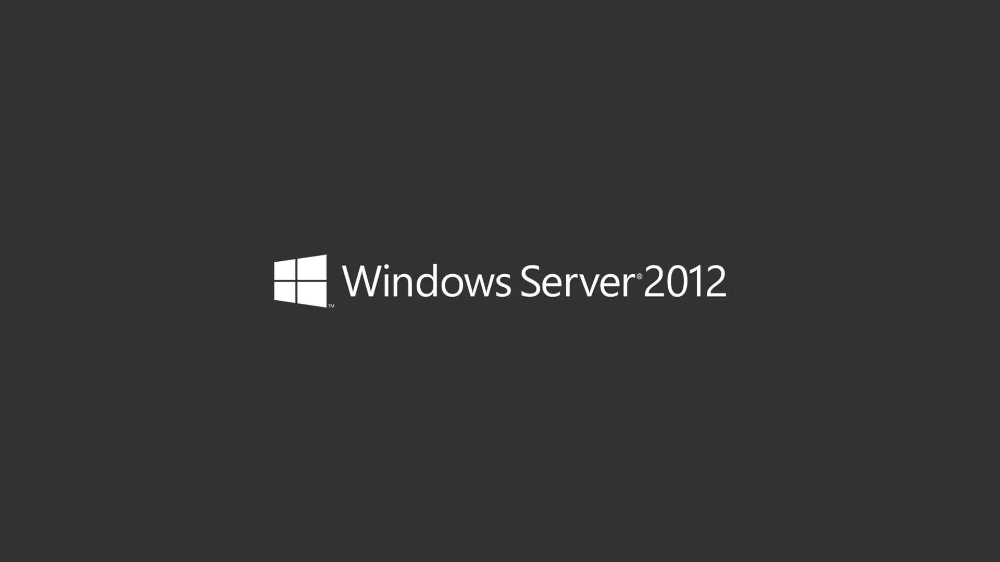
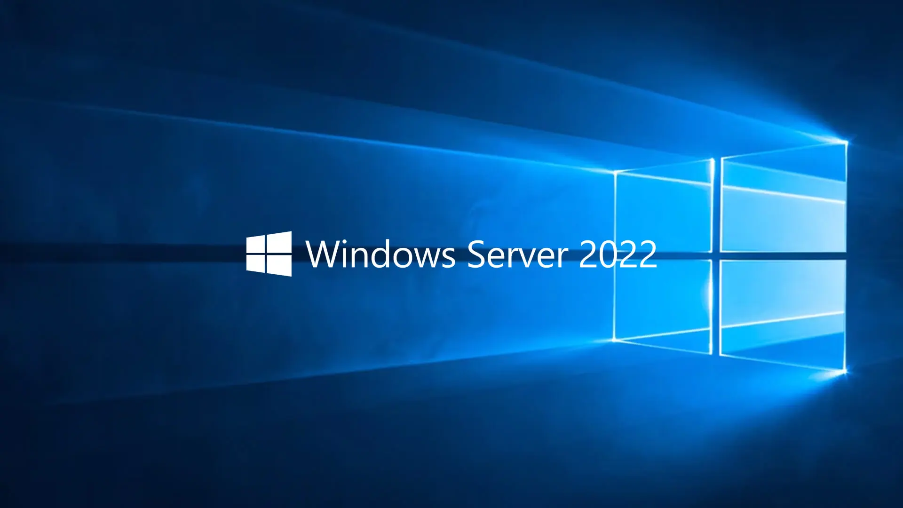

Windows Server 2012
Released: September 4, 2012 | Arch: 64-bit
File Format: ISO
Host: Archive.org
Windows Server 2012 R2
Released: April 2014 | Arch: 64-bit
File Format: ISO
Host: Archive.org
Windows Server 2016
Released: September 26, 2016 | Arch: 64-bit
File Format: ISO
Host: Archive.org

Windows Server 2019
Released: October 2, 2018 | Arch: 64-bit
File Format: ISO
Host: Archive.org

Windows Server 2022
Released: August 18, 2021 | Arch: 64-bit
File Format: ISO
Host: Archive.org
Windows Server 2025
Released: November 1, 2024 | Arch: 64-bit
File Format: ISO
Host: Archive.org